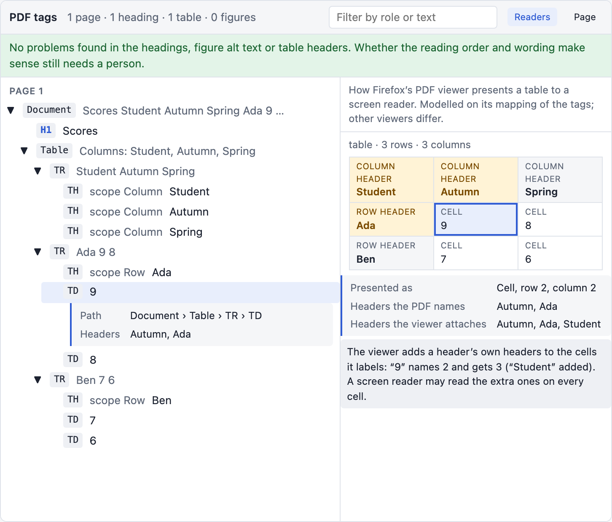

It reads what the browser, or the PDF viewer, builds from it.
On the web, you write HTML.
The browser turns it into a tree for the screen reader.
Each cell arrives with its headers.
The rules for that step are written down. Every browser follows them.
So testing the page tells you what will be heard.
A PDF has tags instead.
A validator checks the tags. This file passes.
But the rules for the viewer's step are still an early draft.
Firefox builds the table, but with no size.
Chrome builds no table at all. Only lines of text.
Safari builds the table as it was written.
One valid file. Three results.
A passing PDF check says the file is right, not that it is read right.
Typfolio's dev tools will show what the viewer builds.
The Readers view, in the next release.
You write HTML
The browser builds
A screen reader gets
Headers of 9: AutumnAda
RulesHTML-AAM, Core-AAM W3C
The same table in every browser
✓Chrome
✓Firefox
✓Safari
Your generator writes tags
Each viewer builds
✓PDF/UA validation passes
RulesPDF-AAM W3C
An early draft. Tables are not in it yet.
Every viewer in use was written before it, each with rules of its own.
The same
file
✓PDF/UA
A table, with rows and headers
But its cells are empty boxes
Their text sits in a separate layer
So table and cells measure 0 × 0
✕“Table not found”VoiceOver skips a table that has no size
textStudent Autumn Spring
textAda 9 8
textBen 7 6
No table is built
One line of text per row
No rows, no cells, no headers
✕“Table not found”There is no table to find
A table, with rows and headers
The table measures 162 × 65
Headers of 9: AutumnAda
✓Reads the table9 with its two headers
Web
HTML and ARIA
The browserRules: HTML-AAM, Core-AAM
The same in every browser
A test checks the page
Written rules carry the result the rest of the way
Tags
Each viewerRules: PDF-AAM, an early draft
Different in each viewer
A validator checks the tags
No settled rules for this step, and no test checks it
Tags in the PDF
The table, as Firefox's viewer presents it
Headers the PDF namesAutumnAda
Headers the viewer attachesAutumnAdaStudent
The viewer adds one that your PDF does not name. Now you can see it.
Tags on the left.
What the viewer builds on the right.
It follows the rules of Firefox's viewer, and is tested against the real one.

HelioCampus/typfolio
@typfolio/dev-tools
Accessible PDFs in the browser, from Typst templates
HelioCampus/typfolio